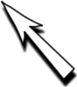

<?xml version="1.0" encoding="ISO-8859-1"?>
<!DOCTYPE html PUBLIC "-//W3C//DTD XHTML 1.0 Transitional//EN" "http://www.w3.org/TR/xhtml1/DTD/xhtml1-transitional.dtd">
<html xmlns="http://www.w3.org/1999/xhtml">
<head>
<meta http-equiv="Content-Type" content="text/html; charset=iso-8859-1" />
<meta name="Author" content="alta4" />
<meta name="Generator" content="ImageMapper 9.1 (System_OS_MSW) [alta4] registered to alta4" />
<meta name="keywords" content="alta4, ImageMapper 9.1, ArcView, ArcEditor, ArcInfo" />
<meta name="robots" content="index" />
<meta name="robots" content="follow" />
<link rel="Stylesheet" type="text/css" href="print.css" /> 
<link rel="stylesheet" type="text/css" href="formate.css" /> 
<script type="text/javascript" language="JavaScript" src="newwindow.js"></script> 
<script type="text/javascript" language="JavaScript" src="allModule.js"></script> 
<script type="text/javascript" language="JavaScript" src="config.js"></script> 
<script type="text/javascript" language="JavaScript" src="kernel.js"></script> 
<script type="text/javascript" language="javascript"> 
<!-- 
 
function create() {     
  document.write(parent.create()); 
  return; 
} 
 
function writeatt() { 
   document.write(parent.writeatt()); 
   return;      
} 
 
function writelegend() {    
   document.write(parent.writelegend()); 
   return;  
} 
 
function writemarklayer() { 
   var elm = document.getElementById("mapimage"); 
   var x = getAbsoluteX(elm); 
   var y = getAbsoluteY(elm); 
   var arr = parent.geta_geo_mpoint();      
   if(arr[0] != 0) { 
       var x = arr[0] + x; 
       var y = arr[1] + y;      
       document.write("<div style='position:absolute; z-index:4;left:"+x+"px; top:"+y+"px;'>"); 
       document.write(""); 
       document.write("</div>"); 
   } 
   return;  
} 
 
function getAbsoluteX (elm) { 
   var x = 0; 
   if (elm && typeof elm.offsetParent != "undefined") { 
       while (elm && typeof elm.offsetLeft == "number") { 
           x += elm.offsetLeft; 
           elm = elm.offsetParent; 
       } 
   } 
   return x; 
} 
 
function getAbsoluteY(elm) { 
   var y = 0; 
   if (elm && typeof elm.offsetParent != "undefined") { 
       while (elm && typeof elm.offsetTop == "number") { 
           y += elm.offsetTop; 
           elm = elm.offsetParent; 
       } 
   } 
   return y; 
} 
 
//-->  
</script> 
 
<title>Imprimir</title> 
</head> 
<body> 
<table id="maintable" summary="The Map"> 
  <tr> 
    <td colspan="2"><script type="text/javascript">create();</script></td> 
  </tr> 
  <tr valign="top"> 
   <td colspan="2"><div class="info_item"><script type="text/javascript">writeatt();</script></div></td> 
  </tr> 
  <tr valign="top"> 
   <td colspan="2"><div class="info_item"><script type="text/javascript">writelegend();</script></div></td> 
  </tr> 
</table> 
<script type="text/javascript">writemarklayer();</script> 
</body> 
</html>
